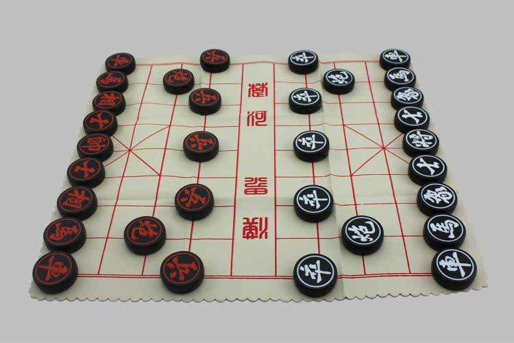
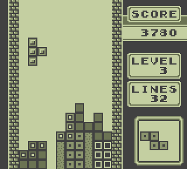
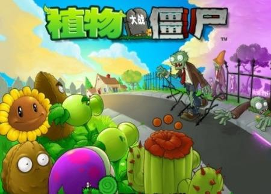
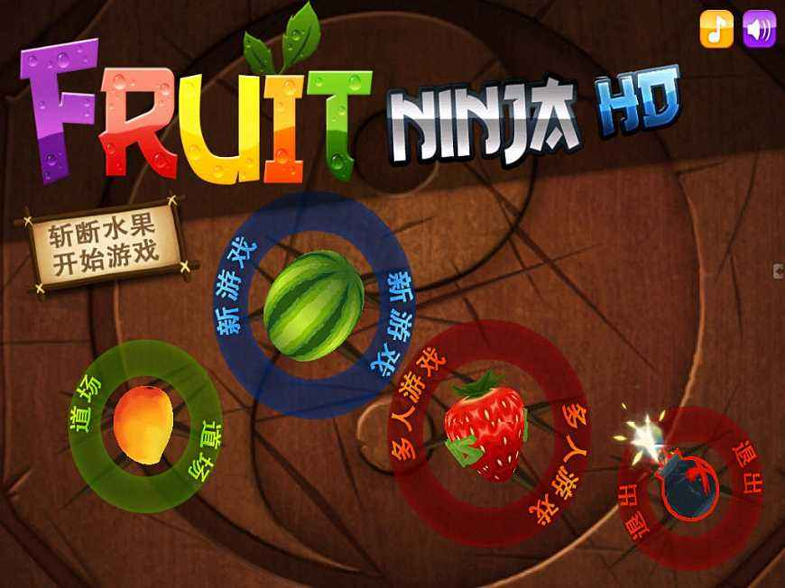
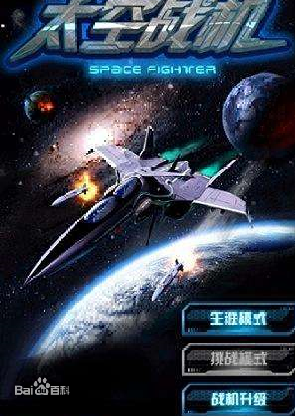
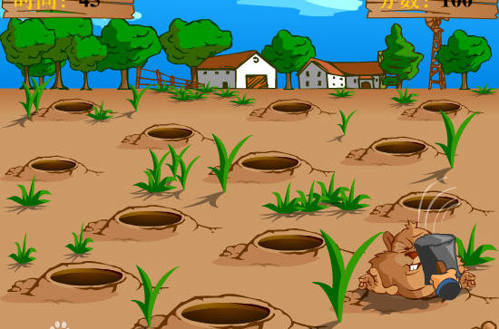
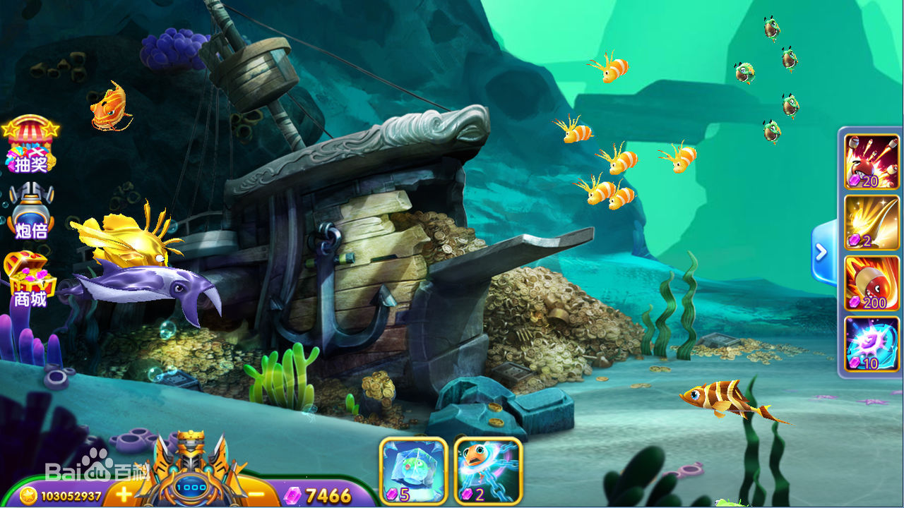
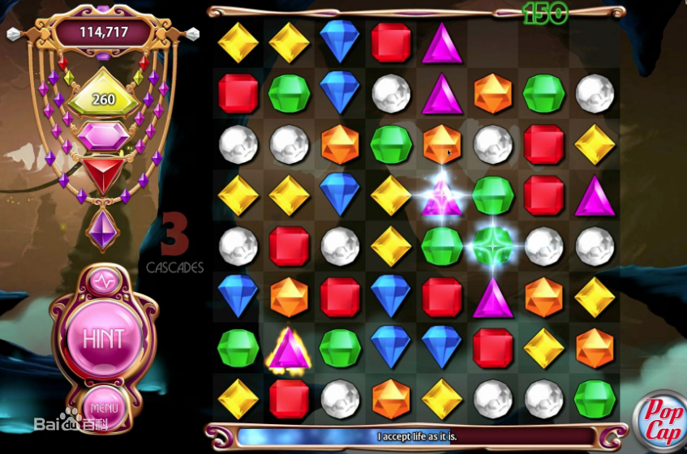

回忆中的哪些经典游戏
-
中国象棋
益智类游戏

籍贯：中国发源：战国时期
适合：5岁以上儿童
中国象棋是中国棋文化也是中华民族的文化瑰宝，它源远流长，趣味浓厚，基本规则简明易懂，千百年来长盛不衰。中国象棋是模拟的古代战争、直线战争、陆地战争、平面战争。 -
俄罗斯方块
益智类游戏

籍贯：前苏联发源：1984
适合：3岁以上儿童
《俄罗斯方块》的基本规则是移动、旋转和摆放游戏自动输出的各种方块，使之排列成完整的一行或多行并且消除得分。 -
植物大战僵尸
益智类游戏

籍贯：美国发源：2009
适合：5岁以上儿童
玩家通过武装多种植物切换不同的功能，快速有效地把僵尸阻挡在入侵的道路上。不同的敌人，不同的玩法构成五种不同的游戏模式，加之黑夜、浓雾以及泳池之类的障碍增加了游戏挑战性。 -
水果忍者
益智类游戏

籍贯：澳大利亚发源：2010
适合：5岁以上儿童
《水果忍者》这款游戏的创意来源也非常简单，就是一位员工在家里看到电视播放销售水果刀的广告，为了体现出刀的锋利，广告里推销员把香蕉抛向空中，然后用水果刀在空中把香蕉切开。 -
太空战机
射击类游戏

籍贯：美国发源：不详
适合：5岁以上儿童
太空战机是经典的射击类街机游戏， 拥有超多的30关各具特色的关卡，几十种敌机和Boss，超酷的弹幕和特技。3种不同类型武器和必杀技，5大护航编队，7种防御和攻击特技，加上5个级别的升级系统和装配系统，让玩家拥有不一样的弹幕射击游戏体验。 -
超级玛丽
益智类游戏
籍贯：日本发源：1985
适合：5岁以上儿童
《超级马里奥兄弟》，是任天堂公司开发并于1985年出品的著名横版过关游戏，最早在红白机上推出，有多款后续作品，迄今多个版本合共销量已突破5亿4000万套。。 -
打地鼠
益智类游戏

籍贯：美国发源：不详
适合：5岁以上儿童
《打地鼠》是一个趣味性的游戏副本，模仿大家熟悉的打地鼠小游戏。游戏由2-4个玩家合作使用技能消灭地洞里的地鼠，相应颜色的玩家杀死相应颜色的地鼠，最后结算得到的总分。 -
捕鱼达人
益智类游戏

籍贯：中国发源：2009
适合：5岁以上儿童
《捕鱼达人》是一款以深海狩猎为题材的休闲竞技游戏。2009年《捕鱼达人》上线，最初以简单轻松的捕鱼玩法获得了玩家的喜爱。此后，不断推陈出新。 -
宝石迷阵
益智类游戏

籍贯：美国发源：2002
适合：5岁以上儿童
诞生于2000年的《宝石迷阵》是一款锻炼眼力的宝石交换消除游戏。游戏画面会出现各种各样、不同颜色的宝石，游戏的规则就是通过交换相邻的两块宝石，使3个同一颜色的宝石连在一起，就可以消去他们。 -
植物大战僵尸
益智类游戏
籍贯：美国发源：2009
适合：5岁以上儿童
玩家通过武装多种植物切换不同的功能，快速有效地把僵尸阻挡在入侵的道路上。不同的敌人，不同的玩法构成五种不同的游戏模式，加之黑夜、浓雾以及泳池之类的障碍增加了游戏挑战性。 -
植物大战僵尸
益智类游戏
籍贯：美国发源：2009
适合：5岁以上儿童
玩家通过武装多种植物切换不同的功能，快速有效地把僵尸阻挡在入侵的道路上。不同的敌人，不同的玩法构成五种不同的游戏模式，加之黑夜、浓雾以及泳池之类的障碍增加了游戏挑战性。